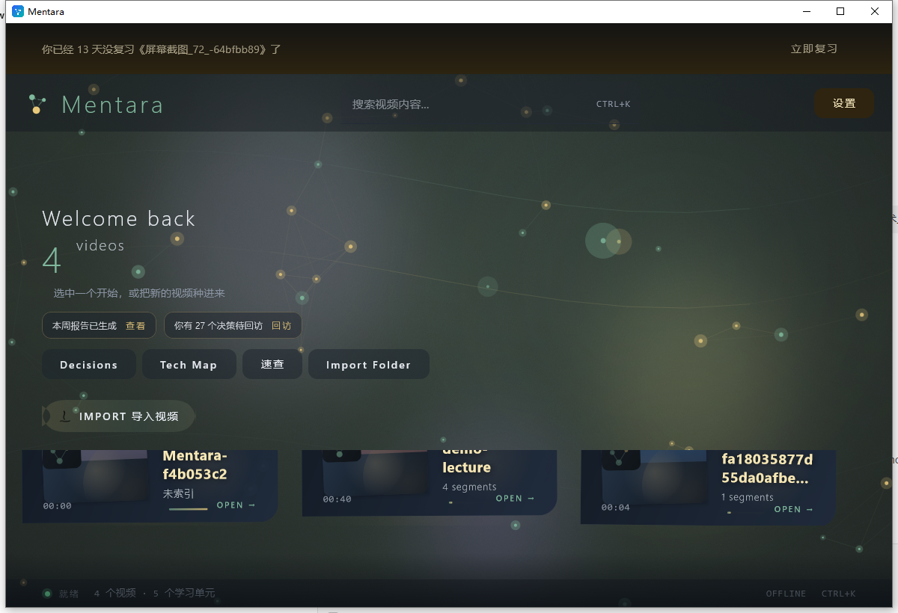
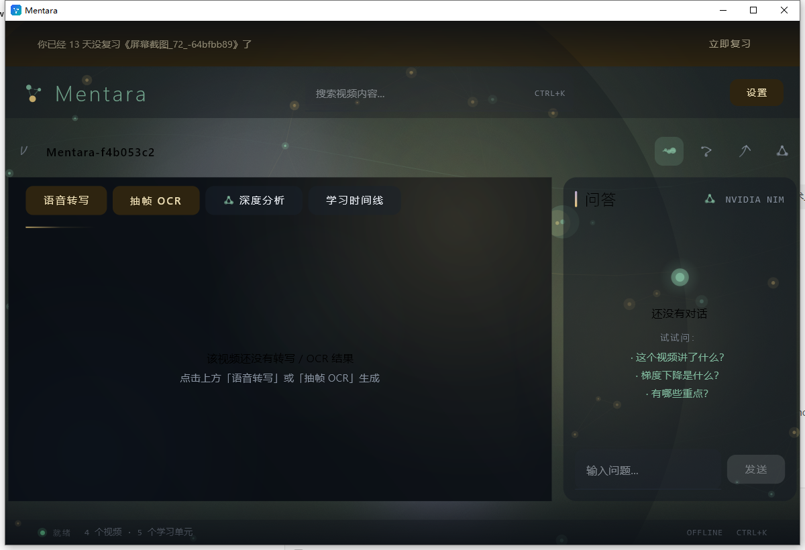
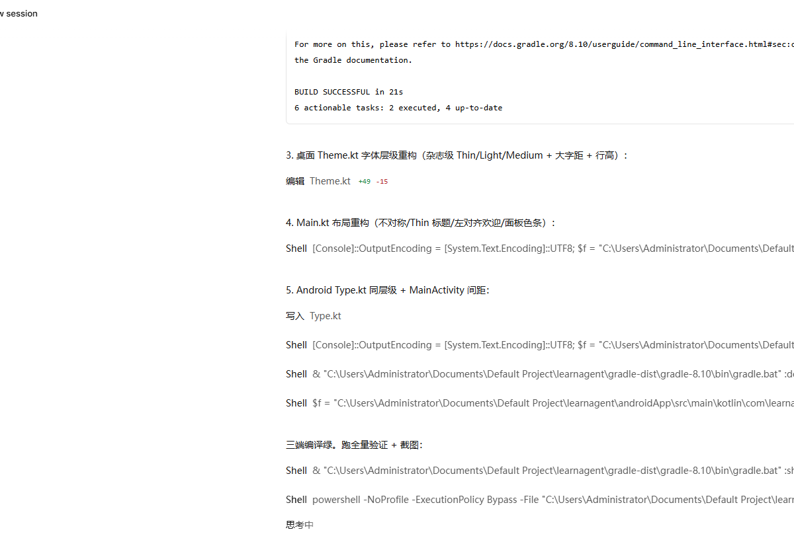

Mentara
Turn any lecture video into clean, cited study notes — on mobile & desktop.
把任何网课视频变成干净、可溯源的学习笔记 —— 手机 + 桌面双端。
Build
License
Platform
Kotlin
PRs
---
Demo
Screenshots coming — placeholders for the first release.
| Parse & Timeline | Debate (3 models) | Notes output |
|:-:|:-:|:-:|
| 
| 
| 
|
---
Features
• Ingest everything, everywhere — Import a lecture video (mp4/mkv/…), Mentara extracts 16 kHz mono audio and slices frames on-device.
• 1 fps + perceptual dedup — Frames are compared via a 32×32 grayscale signature; ≥90 % similar frames skip OCR entirely. Slide decks stop burning your CPU.
• Multimodal parse pipeline — Speech (SenseVoice) and screen text (ML Kit OCR) are merged into one timeline [mm:ss] speech | screen.
•
SenseVoice, offline & bundled — Chinese ASR (CER ≈ 5 % class) runs fully on-device via
sherpa-onnx. No account, no cloud, no heat.
• Garbage-in firewall — Regex pre-filters strip OCR garbage (player overlays, TTTT repeats, TRACE-style noise) and ASR hallucinations (my when when when) *before* any LLM sees them.
• Vision proofreading (see-the-picture, fix-the-words) — A VLM re-reads each screenshot and corrects the OCR text against what is *actually* on screen.
• Consensus correction, chunked — A second pass rewrites the merged transcript in 2 500-char chunks (no timeouts): typos fixed, repetition removed, Simplified-Chinese-only enforced, "no inventing" enforced.
• Timeline as first-class UI — The video and its parsed timeline live in the same pane; tap any line to jump and keep playing.
• Permanent knowledge base — Every parse writes skill.md (full archive) + notes; later Q&A answers with *your own video* as context, across videos.
• 3-model debate, background-proof — Kimi / DeepSeek / GLM debate with per-seat fallback, phase checkmarks, elapsed timer; leaves the foreground without cancelling.
• Built to be left alone — Foreground service + wake-lock keep long parses alive with the screen off; screen stays on during parsing if you prefer.
• Dual-platform, one core — All domain logic lives in shared/ (Kotlin Multiplatform). Android and Windows are thin UI shells.
---
Architecture
shared/ Kotlin Multiplatform core — parser, ASR routing, OCR firewall,
merge, consensus correction, debate engine, storage contracts
androidApp/ Jetpack Compose UI + sherpa-onnx (SenseVoice) + ML Kit OCR
desktopApp/ Compose Desktop UI + Windows media/OCR toolchain
Why not /android and /windows side-by-side folders? Because every line of
domain logic is shared through KMP — duplicating it per platform would be an
anti-pattern. This three-module monorepo is the industry-standard layout for
dual-platform Kotlin projects.
---
Build
Requirements: JDK 17+, Android SDK (compileSdk 35), NDK 25.2+, CMake 3.22+
# 1) fetch the on-device ASR model once (~228 MB, hf-mirror)
powershell -File scripts/fetch-sensevoice-model.ps1
2) Android APK
./gradlew :androidApp:assembleDebug
3) Windows desktop
./gradlew :desktopApp:build
4) tests
./gradlew :shared:jvmTest
Configuration
Runtime configuration (API keys, model choice) is entered inside the app —
nothing is hard-coded, nothing is committed. Local machine paths live in
local.properties (git-ignored).
---
Known Issues
We ship honesty with the code:
• OCR garbage in extreme scenes — heavy subtitle burn-in, low-contrast text
and rapid scene cuts can still yield artifacts. The regex firewall and VLM
proofreading reduce this heavily, but are not (yet) bulletproof.
• High-concurrency parsing is limited — the on-device pipeline processes one
video at a time by design; parallel Whisper/SenseVoice long-form inference is
out of scope for phone-class hardware.
• First-run install cost — the bundled SenseVoice model adds ~210 MB to the
APK and a one-time ~600 MB free-space requirement during install.
• Long lectures are slow on low-end devices — a 78-minute lecture with full
VLM proofreading is measured in tens of minutes.
Roadmap
☐ Stronger garbage regex bank + per-frame UI-region detection
☐ Obsidian plugin / vault sync (notes with [[links]] and timestamps)
☐ Abstract the dual-platform cores behind a single interface layer
☐ Subtitle burn-in export (.srt from ASR timeline)
☐ Batch queue: learn a whole course overnight
---
Join Us
I am a 17-year-old independent developer. 这是我从 0 到 1 的探索。代码可能不够完美，但双端同步的架构正在快速迭代。Issues and PRs are welcome.
Working on something adjacent — on-device ASR, multimodal parsing, learning tools? Open an Issue. I read everything, and the code is the resume.
---
License
MIT © 2026 tickingarea
Mentara · 本页运行于 GitHub Pages · 仓库：github.com/tickingarea/mentara